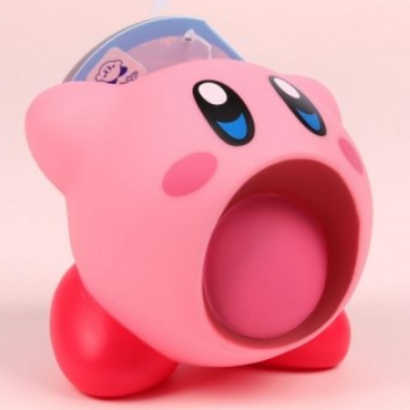

안녕하세요, Mandy입니다 👋
고객의 목소리를 가장 가까이에서 듣고, 모두닥을 더 편리하고 신뢰할 수 있는 서비스로 만들어가고 있어요.
좋아하는 것
-
🧱블록 조립하기
-
🌿자연 구경하기
🍪 쿠키 하트를 눌러보세요
요즘 빠진 것
- 🤖Claude Code로 웹페이지 만들기
- 🌿Git · GitHub로 브랜치 만들고 배포하기

고객의 목소리를 가장 가까이에서 듣고, 모두닥을 더 편리하고 신뢰할 수 있는 서비스로 만들어가고 있어요.
🍪 쿠키 하트를 눌러보세요